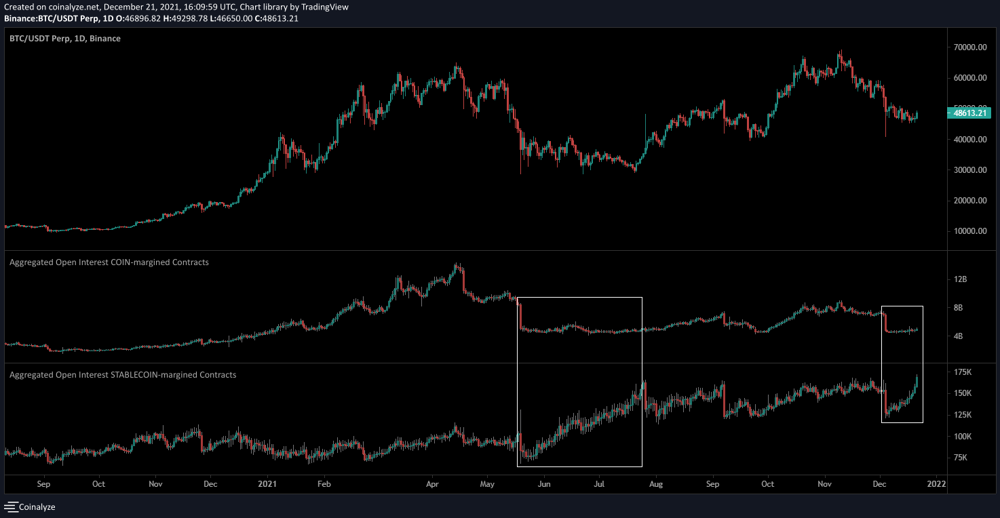
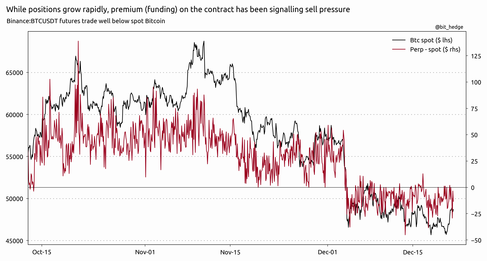

December 21st, 2021 12:16pm
Under the surface of a market that may seem quiet as major cryptos have done nothing but grind slowly lower for the past 2 and a half weeks, positions in cash-margined BTC futures have begun outstripping growth in their coin-margined counterparts at a torrid pace (+$2Bn) and today have gone even more vertical to reach new all time highs...
The best analog is obvious:
And although the duration and percentage growth of this buildup is below that seen in July the acceleration is impressive, all the while the contract behind this this surge trades at a continuous discount of up to $50 below spot due to what can only be assumed is a market aggressively selling to open.
Meaning the only thing left needed to ignite a short squeeze that sends Bitcoin up thousands in minutes is a return to just a few points above the highs seen this morning, first running the honeypot of stops at $50k and then wiping out hundreds of millions of dollars worth of leveraged shorts.
It seems today that the coin needs just one more routine liftathon in SPX to kick things off.